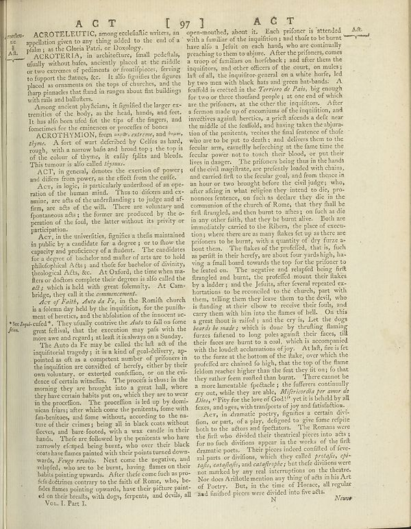

Scan ID britannica:309f765b1ecc83e0a7f7762e44b4a927a7555443:train:563
Image SHA-256 d12ce09577cd595ffccb50fb02c3988a960dc48cddaf8a615756fb5f60aaa587
Status: ok. Running header: none (none). Removed page furniture: Page-footer: _Neurse_.
PDF · raw Parse reply · LaTeX
Entries: E0052 ACROTELEUTIC ACROTHYMION

| # | Class | Box | Parse 3.5 | Used text | Source |
|---|---|---|---|---|---|
| 0 | Title | [0.1768, 0.0297, 0.7207, 0.0516] | ACT [ 97] ACT | The user wants me to correct the OCR text based on the provided image. **1. Analyze the Image:** - The image shows a header line from an old book (18th or 19th century encyclopaedia). - The text visible is: "A C T [ 97 ] A C T". - There are spaces between the letters. - There is a page number in brackets: [ 97 ]. - The text repeats "A C T" on the left and right. **2. Analyze the OCR text provided:** - "ACT [ 97] ACT" - The OCR has merged the letters "A C T" into "ACT". - The OCR has a slight spacing issue in "[ 97]". **3. Apply Rules:** - "write the long s as 's'": No long s visible here. - | super_vl · expanded_beyond_parse |
| 1 | Text | [0.0537, 0.0453, 0.4443, 0.1945] | ACROTELERUTIC, among ecdefalific writers, an appellation given to any thing added to the end of a plain; at the Gloria Patrir, or Doxology. GENERAL OTRISTERIA), in aestheticism, insall pedeals, usually without hates, secretly placed at the middle or two extremes of podmats or frontlipieces, ferrying to fopport the flames, see. It calls figuishes the figures placed as ornament on the tops of cherches, and the Pharp pointed that Band in ranges about flat buildings with rails and ballers. | ACROTELEUTIC, among ecclesiastical writers, an appellation given to any thing added to the end of a psalm; as the Gloria Patri, or Doxology. ACROTERIA, in architecture, small pedestals, usually without bases, anciently placed at the middle or two extremes of pediments or frontispieces, serving to support the statues, &c. It also signifies the figures placed as ornaments on the tops of churches, and the sharp pinnacles that stand in ranges about flat buildings with rails and balusters. | super_vl |
| 2 | Text | [0.0664, 0.193, 0.4434, 0.2484] | Among ancient physicians, it figuified the larger ex-tremities of the body, as the heal, healths, and feet. It has also been rigid for the tips of the fingers and functions for the existence or proefices of bones. | Among ancient physicians, it signified the larger extremities of the body, as the head, hands, and feet. It has also been used for the tips of the fingers, and sometimes for the eminences or processes of bones. | super_vl |
| 3 | Text | [0.0645, 0.2469, 0.4453, 0.3172] | AGROTHYMON, from _works_, _stresses_ and _hetype._ A few of wart deferled by Celtics au hard, rough, with a narrow bala and broad top; the top is of the colon: d thyres, it early lipits and bleeds. This tumour is all called tissue. | ACROTHYMION, from ακρος, extreme, and θυμος, thyme. A fort of wart described by Celsus as hard, rough, with a narrow basis and broad top; the top is of the colour of thyme, it easily splits and bleeds. This tumour is also called thymus. | super_vl |
| 4 | Text | [0.0674, 0.3141, 0.4463, 0.3453] | ACT, in general, denotes the exertion of powers and differs from power, as the result from the caife. | This tumour is also called thymus. ACT, in general, denotes the exertion of powers; and differs from power, as the effect from the cause. | super_vl |
| 5 | Text | [0.0654, 0.3445, 0.4473, 0.4391] | Acrs, in logics is particularly underhood of an operation of the human mind. Thus to difern and examine, are acts of the understanding; to judge and at firm, are due of the will. There are voluntary and fpoantous acts, the former are produced by the o- peration of the foul, the latter without its priority or participation. | Act, in logic, is particularly understood of an operation of the human mind. Thus to discern and examine, are acts of the understanding; to judge and affirm, are acts of the will. There are voluntary and spontaneous acts; the former are produced by the operation of the soul, the latter without its privity or participation. | super_vl |
| 6 | Text | [0.0684, 0.4383, 0.4541, 0.5625] | Acr, in the univerities, figuifies a hefixa maintained in public by a candidate for a degree of to those the capacity and proficiency of a fluid. The candidates for a degree of bachelor and matter of arts are to hold philosophical facts; and that for bachelor of divists; theological Ads, etc. At Oxford, the time we make or doctors complete their degrees in alo called the \(\ell\), which is bad with great formally. At Cam bridge, they call the _commencement_. | Act, in the universities, signifies a thesis maintained in public by a candidate for a degree; or to show the capacity and proficiency of a student. The candidates for a degree of bachelor and master of arts are to hold philosophical Acts; and those for bachelor of divinity, theological Acts, &c. At Oxford, the time when masters or doctors complete their degrees is also called the act; which is held with great solemnity. At Cambridge, they call it the commencement. | super_vl |
| 7 | Text | [0.0693, 0.5617, 0.4688, 0.6461] | _Art of Faith, Auto da Fe.,_ in the Romih church is a inform day hall by the inputition, for the punihmatic of herties, and the abolition of the moment ac- ready. They usually contre the data to fall on some great fellows, that the execution may pals with the more are said regards to fault it is why on a Sunday." | Act of Faith, Auto da Fe, in the Romish church is a solemn day held by the inquisition, for the punishment of heretics, and the abolition of the innocent accused. They usually contrive the Auto to fall on some great festival, that the execution may pass with the more awe and regard; at least it is always on a Sunday. | super_vl |
| 8 | Text | [0.0166, 0.6023, 0.4678, 0.9445] | The Auto da Fe may be called the lail ads of the important legacy, it is a kind of goal-delivery, as painted as art as a computer number of princes in the imajdition are convicted of herefly, either by their own voluntary, or extendable condition, or on the very dense of certain vitamines. The precects is thus in the morning they are brought into a great hall, where they have certain habits put on, which they were over in the position. The procedure is led up by domic mica frians; after which come the pretents, fome with fan-bentines, and home without according to the ma-ture of their crimes b | ment of heretics, and the abolition of the innocent ac- cused. They usually contrive the Auto to fall on some great festival, that the execution may pass with the more awe and regard; at least it is always on a Sunday. The Auto da Fe may be called the last act of the inquisitorial tragedy; it is a kind of goal-delivery, ap- pointed as oft as a competent number of prisoners in the inquisition are convicted of heresy, either by their own voluntary, or extorted confession, or on the evi- dence of certain witnesses. The process is thus: in the morning they are brought into a great hall, where the | super_vl |
| 9 | Caption | [0.1045, 0.9437, 0.2139, 0.9602] | Vou. I. Part I. | d on their breasts, | super_vl |
| 10 | Text | [0.4521, 0.0484, 0.8584, 0.9383] | open-noouthed, about it. Each prisoner is attended with a familiar of the imajdition; and thode to be burnt have also a feilini on each hand, who are continually providing them to abquire. After the proninces, occurs a crop of families on horseback; and after them the imajditions, and other officers of the court, on under a full, the imajdition geared in on a whole barfe, led by two men with black hats and green hat-bands. A feathal is erected in the _Perrier of Faith_, though we too no three cardinal people; at one end of which are the prisoners, at the other the imajditions. After fieron mad | open-mouthed, about it. Each prisoner is attended with a familiar of the inquisition; and those to be burnt have also a Jesuit on each hand, who are continually preaching to them to abjure. After the prisoners, comes a troop of familiars on horseback; and after them the inquisitors, and other officers of the court, on mules; last of all, the inquisitor-general on a white horse, led by two men with black hats and green hat-bands. A scaffold is erected in the Terrerio de Paio, big enough for two or three thousand people; at one end of which are the prisoners, at the other the inquisitors. After | super_vl |
Britannica scans: National Library of Scotland, CC0 1.0. Wikipedia text: Wikipedia contributors, CC BY-SA 4.0, revision links on each page. Generated 2026-10-18T13:26:14+00:00.